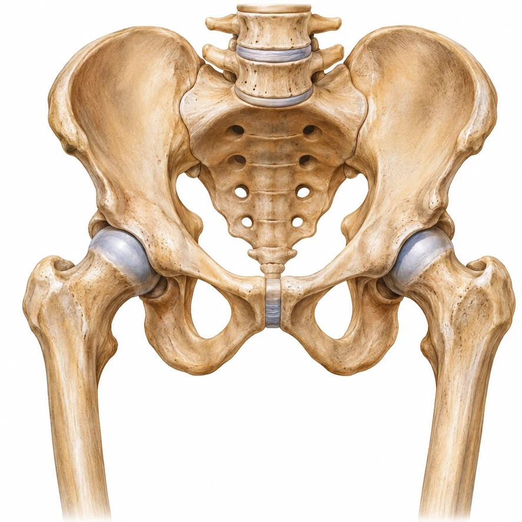
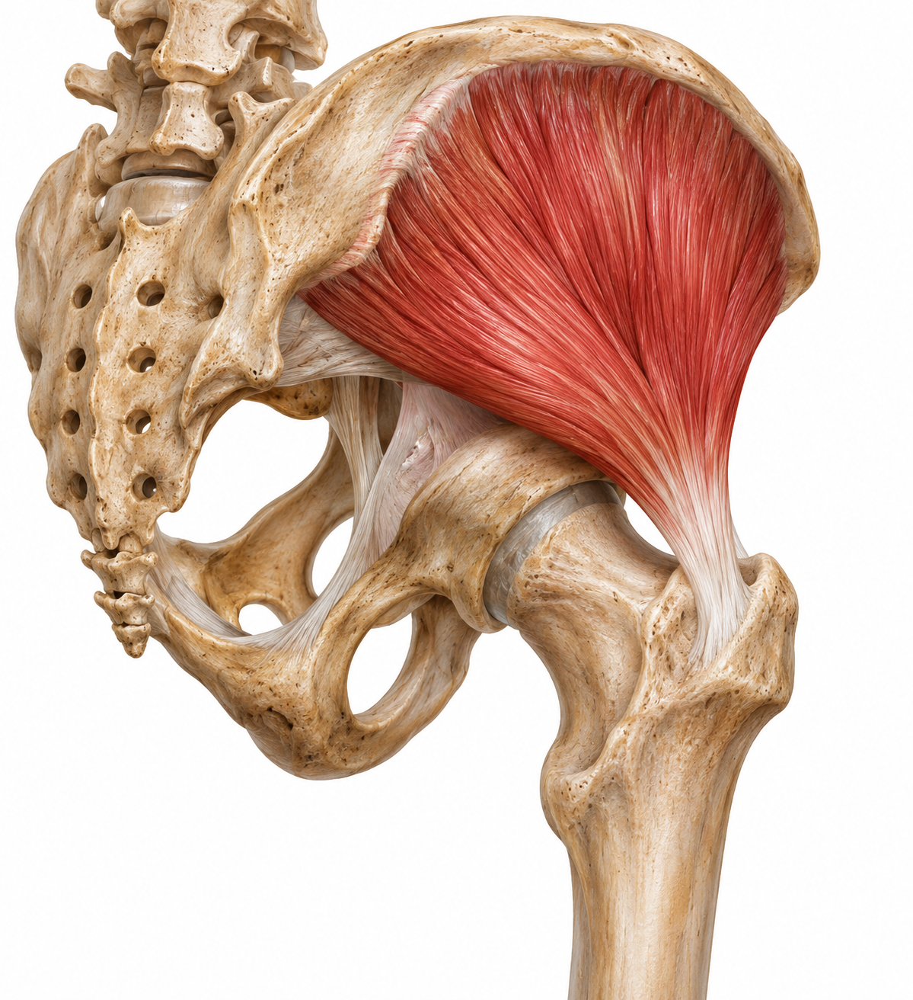

Your subjects
Select a subject to open its revision lab.
ANA1500 · Lecture Library
Lecture-aligned study material, based on your uploaded slides. Select a lecture, read its summary, then test yourself.
ANA1504 · Visual Anatomy Lab
Pelvis and hip · Interactive medical-atlas-style study plates

Version 11 · Anatomical movement and muscle activation studio
Study a detailed gluteus medius illustration, then explore simplified animated hip movements. The illustration is AI-generated educational artwork, not a validated anatomical atlas.

Gluteus medius · Origin: external ilium between anterior and posterior gluteal lines · Insertion: lateral surface of greater trochanter · Innervation: superior gluteal nerve (L4–S1) · Action: hip abduction and pelvic stabilisation; anterior fibres assist medial rotation.
Origin: lateral ilium, between gluteal lines.
Insertion: lateral facet of greater trochanter.
Clinical: weakness can produce a Trendelenburg sign.
Animated hip movement demonstration
Choose a movement and press Play. An anatomical teaching model highlights key muscle groups as the femur moves. Rotations are represented symbolically in 2D, not as true 3D kinematics.
Conceptual 2D animation; transverse-plane rotations are represented symbolically and do not depict true 3D biomechanics.
Muscle Movement Explorer
Select a hip movement to see the plane, prime movers, assisting muscles and functional relevance. Then test your recall.
Muscle anatomy atlas
Explore origins, insertions, innervation, actions and clinical connections. The detailed muscle cards complement the interactive anatomical plates above.
Educational illustration generated for this lab; not a validated clinical atlas. Hotspots are approximate and should be checked against your original ANA1504 lecture diagrams. The first release covers selected major structures only.